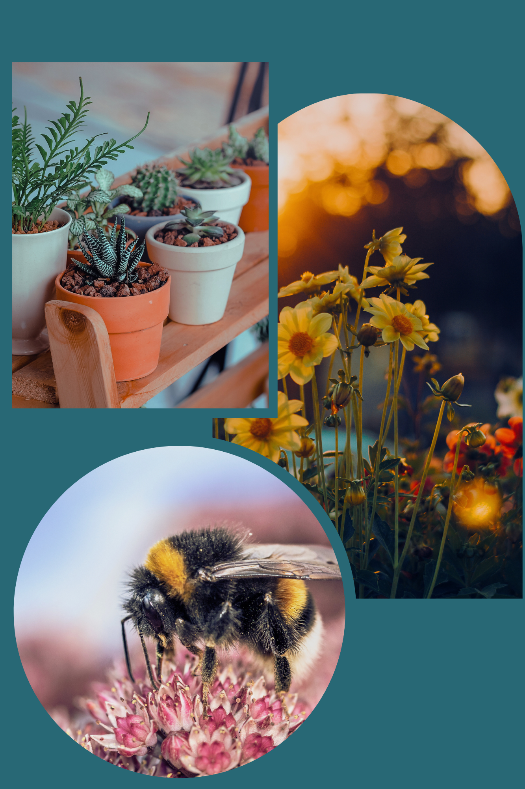

Why Having Urban Gardens?
Urban gardens are precious green spaces amidst the hustle and bustle of cities. They offer a number of benefits for the environment, as well as for the physical and mental well-being of people living in urban areas. They provide fresh produce, build community bonds, and educate people about sustainability. They promote healthy living, offer green spaces in cities, and contribute to local food security. Additionally, they create economic opportunities and support biodiversity, making cities more resilient and sustainable places to live.
Benefits of Urban Gardens
- Reducing urban heat
- Improving air quality
- Promotion of biodiversity
- Mental and physical well-being